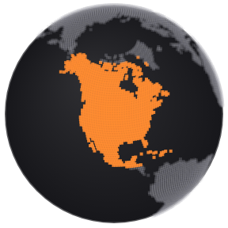
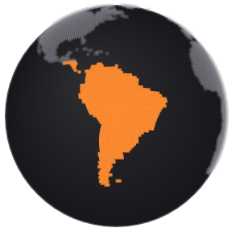
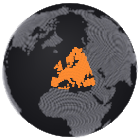
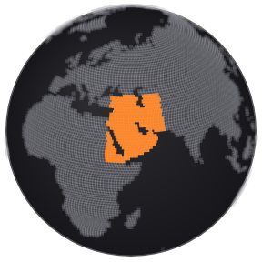
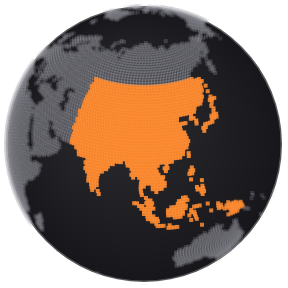
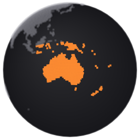

Globe controls: three questions, three options each
You asked for: (1) buttons for Market hours and for the connections of the last 24 hours, placed somewhere less crowded; (2) a new look for the All · Energy · Central banks · Trade & tariffs · Earnings bar and its numbers; (3) flags for the regions with their continents and a matching globe for "All regions". Both layers stay off until someone taps the button. Phone versions sit next to each PC one. Numbers shown are today's real counts.
1 · Where do the Market hours and Connections buttons go?
Today the connections line ("23 connections in the last 24 hours") sits bottom-left as plain text with a legend. Market hours would be a second toggle. Each option below keeps the top bar free.
ALayers menu
One small "Layers" button bottom-left, where the legend is now. It opens a card with two switches, each with a short explanation. The legend moves into the same card.
ConnectionsLast 24 hours · 23 shown
Market hoursNight shade, open exchanges
Layers · 1
BInside the time bar
The existing time bar at the bottom gains two icon toggles after the time windows: a clock for Market hours, a link for Connections. Everything that changes "what you see on the globe" is in one place.
▶Now1H6H24H7D30DLinksHours
CTool rail
A slim vertical rail above the zoom buttons on the right edge. Icon only; a label appears on hover or keyboard focus. Nothing else on the screen changes.
Market hours
+−
ALayers in Filters
Phone: a "Layers" section at the bottom of the Filters sheet with the same two switches.
Layers
ConnectionsLast 24 hours
Market hoursNight shade, open exchanges
BChips on the peek card
Phone: two 44 px buttons right under the story card: Links and Hours.
Bank of Japan Pauses Interest Rates…
LinksHours
CRound buttons
Phone: two round buttons beside the zoom buttons, above the story card.
+
2 · The topic bar: new look for "All · Energy · Central banks · Trade & tariffs · Earnings"
Today (first card): one dark pill holding all five, with orange counts. The three options drop the heavy pill container and give the counts a calmer treatment. Counts are real (24H, global).
·Now
For comparison.
All 160Energy 22Central banks 19Trade & tariffs 5Earnings 15
AUnderline tabs
Plain text tabs on a thin line; the count is a small raised number. The active tab gets an orange underline. Lightest look.
Same pattern as the Region dropdown on the Markets page: one button "Topic: Energy ▾". The menu shows each topic with a small share bar and its count. Takes the least space; best on phone.
Topic: Energy ▾
All160
Energy22
Central banks19
Trade & tariffs5
Earnings15
CChips with count badges
Separate outlined chips, no container. Each count sits in its own round badge on the right; the active chip fills white and its badge turns black.
All 160Energy 22Central banks 19Trade & tariffs 5Earnings 15
APhone
Tabs scroll sideways, 44 px tall.
All160Energy22Central banks19
BPhone
Full-width button, menu opens as a sheet.
Topic: Energy ▾
CPhone
Chips wrap in the Filters sheet.
All 160Energy 22Central banks 19
3 · Regions with flags and continents, plus a matching globe for "All regions"
Today the row is plain text with a generic circle in front of "Global". Every option gives each region an icon and "All regions" a globe in the same style. The continent globes are drawn from the same land data as the main globe, so they match.
AOne flag per region
A round flag stands for each region (US for North America, Brazil for Latin America, EU for Europe, South Africa for Africa, Saudi Arabia for Middle East, Japan for Asia, Australia for Oceania). "All regions" is a round globe. You can swap any flag.
All regionsNorth AmericaLatin AmericaEuropeAfricaMiddle EastAsiaOceania
BContinent globes
Each region is a small globe turned to that continent with the continent lit in orange. "All regions" is the full globe. No country flags, so nothing political; the icon shows exactly what the filter will turn the big globe to.
All regions

North America

Latin America

EuropeAfrica

Middle East

Asia

Oceania
CFlag stacks + globe
Each region shows two or three overlapping flags of its biggest markets (North America US · CA · MX, Europe GB · DE · FR, Asia JP · CN · IN, and so on); "All regions" is the globe. Most informative, a little busier.
All regionsNorth AmericaLatin AmericaEuropeAfricaMiddle EastAsiaOceania
APhone
Region
All regionsNorth AmericaLatin AmericaEuropeAfrica
BPhone
Region
All regionsNorth AmericaLatin AmericaEuropeAfrica
CPhone
Region
All regionsNorth AmericaLatin AmericaEuropeAfrica
Every option keeps 44 px controls, 14 px text and the current behaviour: Market hours and Connections are off until tapped, regions still turn the globe.
 North America
North America Latin America
Latin America Europe
Europe Africa
Africa Middle East
Middle East Asia
Asia Oceania
Oceania
 North America
North America


 Europe
Europe
 Africa
Africa Middle East
Middle East
 Asia
Asia Oceania
Oceania